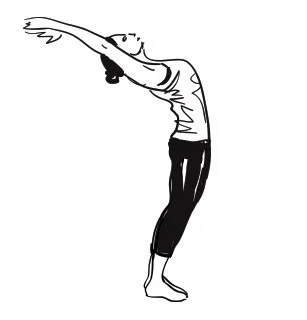
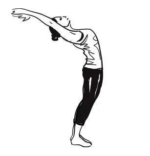

1. Pranamasana (Prayer pose)
• Stand upright with feet together and hands in a namaste position at the chest.
• Focus on deep, steady breathing to bring awareness and calmness.
• This pose helps in grounding the body and preparing for the sequence.This is the content displayed after clicking the first image.
2. Hastauttanasana (Raised arms pose)
• Inhale and lift both arms overhead, stretching backward slightly.
• Engage the core while lengthening the spine.
• This pose helps in improving posture and expanding the chest.This is the content displayed after clicking the second image.
3. Hastapadasana (Standing forward bend)
• Exhale and bend forward from the hips, keeping the back straight initially.
• Try to touch the palms to the floor while keeping the knees slightly bent if needed.
• It enhances flexibility and stimulates digestion.
4. Ashwa Sanchalanasana (Equestrian pose)
• Inhale and step one leg back, lowering the knee to the floor.
• Keep the other knee bent at 90 degrees, hands placed beside the front foot.
• It stretches the legs, strengthens the thighs, and improves balance.
5. Dandasana (Stick pose)
• Exhale and step the other leg back, bringing the body into a straight plank position.
• Engage the core and keep the body in a straight line from head to heels.
• It strengthens the arms, wrists, and spine.
6. Ashtanga Namaskara (Salute with eight parts or points)
• Lower the body so that the chest, knees, chin, and toes touch the ground while keeping the hips slightly raised.
• This pose builds strength and prepares the body for deeper backbends.
• It enhances flexibility and increases upper-body strength.
7. Bhujangasana (Cobra pose)
• Inhale and press into the hands to lift the chest while keeping elbows slightly bent.
• Keep the shoulders relaxed and open the heart forward.
• It strengthens the spine, stimulates digestion, and opens the chest.
8. Adho Mukha Svanasana (Downward facing dog pose)
• Exhale and lift the hips, forming an inverted V shape.
• Keep the heels pressed towards the floor and the head relaxed between the arms.
• This pose stretches the hamstrings, shoulders, and spine while promoting blood circulation.
9. Ashwa Sanchalanasana (Equestrian pose)
• Step one leg forward, bringing the opposite knee to the floor, similar to step 4.
• Keep the back straight and gaze forward.
• It enhances flexibility and prepares for the next transition.
10. Hastapadasana (Standing forward bend)
• Bring the other leg forward to meet the first, returning to the forward bend position from step 3.
• Keep the spine elongated and breathe deeply.
• It soothes the nervous system and improves circulation.
11. Hastauttanasana (Raised arms pose)
• Inhale and slowly rise up, lifting both arms overhead again.
• Slightly arch the back and stretch the entire body.
• It energizes the body and improves posture.
12. Tadasana (Mountain Pose)
• Exhale and bring the hands down to the sides, standing tall.
• Keep the feet together and evenly distribute the weight.
• This final pose brings stability and balance, promoting mindfulness.
 
